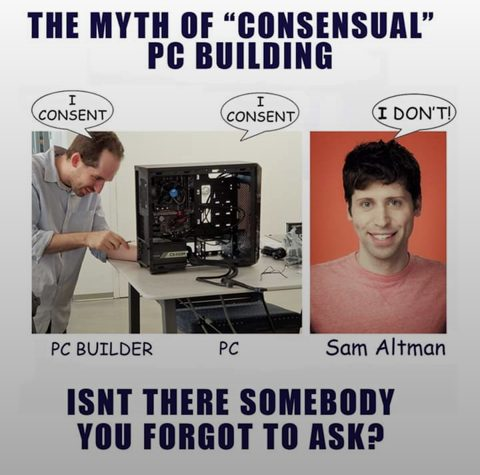
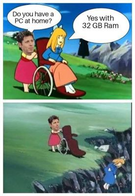
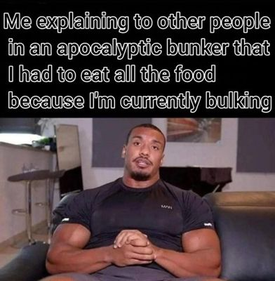
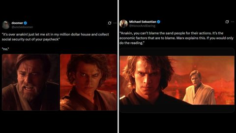

TOP 10 MEMES TODAY
-

1. MACAULAY CULKIN GOES AS THE 'THOUSAND-YARD STARE' MEME FOR HALLOWEEN
Credit: posted by @DiscussingFilm on X. © its owner; shown in small form for ranking and commentary. View original -

2. ALTMAN: DRAM IN HOME PCS IS 'QUITE TERRIBLE' ALLOCATION... INTERNET HIDES ITS DIMMS
Credit: posted by u/famsteve20015 on r/memes. © its owner; shown in small form for ranking and commentary. View original -
“I have this great idea for a drug called Regretamine. One dose and all your regrets are gone!”
3. ELON MUSK JOKES ABOUT A DRUG CALLED 'REGRETAMINE'... REPLIES RUN WILD
Credit: posted by @elonmusk on X. © its owner; shown in small form for ranking and commentary. View original -
“she only wants me for my pakistani citizenship”
4. 'SHE ONLY WANTS ME FOR MY PAKISTANI CITIZENSHIP' -- COPYCATS FLOOD TIMELINE
Credit: posted by @vibeistani on X. © its owner; shown in small form for ranking and commentary. View original -

5. 'THE MYTH OF CONSENSUAL PC BUILDING': REDDIT ANSWERS ALTMAN'S RAM REMARK
Credit: posted by u/ExpiredNegation on r/memes. © its owner; shown in small form for ranking and commentary. View original -

6. 'DO YOU HAVE A PC AT HOME?' 'YES, WITH 32GB' -- OVER THE CLIFF SHE GOES
Credit: posted by u/Odysseus1710 on r/memes. © its owner; shown in small form for ranking and commentary. View original -
7. NO NUT NOVEMBER, DAY ONE: 'I CAN'T DO IT, GENTS'
Credit: posted by u/SpectrumSense on r/dankmemes. © its owner; shown in small form for ranking and commentary. View original -
“Ken Paxton eats salsa made in New York City.”
8. X USERS JOKE THAT KEN PAXTON 'EATS SALSA MADE IN NEW YORK CITY'
Credit: posted by @leftcoastbabe on X. © its owner; shown in small form for ranking and commentary. View original -

9. BUNKER SURVIVOR ATE ALL THE FOOD: 'I'M CURRENTLY BULKING'
Credit: posted by u/Primary-Cancel-6706 on r/memes. © its owner; shown in small form for ranking and commentary. View original
TOP 10 MEMES THIS WEEK
-

1. H3'S ETHAN KLEIN CHEATING ALLEGATIONS SPAWN A MEME FACTORY, PER KYM
Credit: image via Know Your Meme; original creators as documented there. © its owner; shown in small form for ranking and commentary. View original -

2. '*PAWS AT YOU*': AI SNOW LEOPARD 'SNOWMEI' BEGS ITS WAY ACROSS THE INTERNET
Credit: image via Know Your Meme; original creators as documented there. © its owner; shown in small form for ranking and commentary. View original -
3. MACAULAY CULKIN GOES AS THE 'THOUSAND-YARD STARE' MEME FOR HALLOWEEN
Credit: posted by @DiscussingFilm on X. © its owner; shown in small form for ranking and commentary. View original -

4. TIKTOK'S SKULL CAP GLOW-UP TREND HITS 12.8M VIEWS
Credit: image via Know Your Meme; original creators as documented there. © its owner; shown in small form for ranking and commentary. View original -

5. 'MINI PRODUCER' JAY THOMAS MANUEL TAKES OVER FEEDS
Credit: image via Know Your Meme; original creators as documented there. © its owner; shown in small form for ranking and commentary. View original -
6. ALTMAN: DRAM IN HOME PCS IS 'QUITE TERRIBLE' ALLOCATION... INTERNET HIDES ITS DIMMS
Credit: posted by u/famsteve20015 on r/memes. © its owner; shown in small form for ranking and commentary. View original -
“I have this great idea for a drug called Regretamine. One dose and all your regrets are gone!”
7. ELON MUSK JOKES ABOUT A DRUG CALLED 'REGRETAMINE'... REPLIES RUN WILD
Credit: posted by @elonmusk on X. © its owner; shown in small form for ranking and commentary. View original -

8. JIREN DANCES TO 'I'M SO IN LOVE WITH YOU'
Credit: image via Know Your Meme; original creators as documented there. © its owner; shown in small form for ranking and commentary. View original -
“she only wants me for my pakistani citizenship”
9. 'SHE ONLY WANTS ME FOR MY PAKISTANI CITIZENSHIP' -- COPYCATS FLOOD TIMELINE
Credit: posted by @vibeistani on X. © its owner; shown in small form for ranking and commentary. View original -

10. ANAKIN SKYWALKER BECOMES THE FACE OF GEN Z MALE RAGE
Credit: image via Know Your Meme; original creators as documented there. © its owner; shown in small form for ranking and commentary. View original
TOP 10 MEMES THIS MONTH
-

1. AI RUMPELSTILTSKIN 'TIP TOEIN' IN MY JORDANS'
Credit: image via Know Your Meme; original creators as documented there. © its owner; shown in small form for ranking and commentary. View original -
2. H3'S ETHAN KLEIN CHEATING ALLEGATIONS SPAWN A MEME FACTORY, PER KYM
Credit: image via Know Your Meme; original creators as documented there. © its owner; shown in small form for ranking and commentary. View original -
3. '*PAWS AT YOU*': AI SNOW LEOPARD 'SNOWMEI' BEGS ITS WAY ACROSS THE INTERNET
Credit: image via Know Your Meme; original creators as documented there. © its owner; shown in small form for ranking and commentary. View original -

4. 'MALFOID': FEMALE DRACO MALFOY ART TAKES OVER
Credit: image via Know Your Meme; original creators as documented there. © its owner; shown in small form for ranking and commentary. View original -
5. MACAULAY CULKIN GOES AS THE 'THOUSAND-YARD STARE' MEME FOR HALLOWEEN
Credit: posted by @DiscussingFilm on X. © its owner; shown in small form for ranking and commentary. View original -

6. 'WHILE THEY ARE OUT PARTYING...' -- 35M VIEWS
Credit: image via Know Your Meme; original creators as documented there. © its owner; shown in small form for ranking and commentary. View original -
7. TIKTOK'S SKULL CAP GLOW-UP TREND HITS 12.8M VIEWS
Credit: image via Know Your Meme; original creators as documented there. © its owner; shown in small form for ranking and commentary. View original -

8. 'I'M SO SORRY' TIKTOK SLIDESHOW TREND -- 25.6M VIEWS
Credit: image via Know Your Meme; original creators as documented there. © its owner; shown in small form for ranking and commentary. View original -
9. 'MINI PRODUCER' JAY THOMAS MANUEL TAKES OVER FEEDS
Credit: image via Know Your Meme; original creators as documented there. © its owner; shown in small form for ranking and commentary. View original -

10. 'YOU'RE BLATANTLY JUST NOT ME NAN' -- 12M VIEWS
Credit: image via Know Your Meme; original creators as documented there. © its owner; shown in small form for ranking and commentary. View original